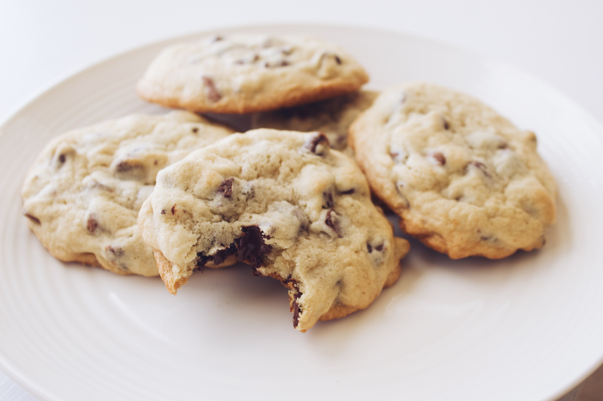

Chocolate Chip Cookies

Ingredients
- 1/2 cup butter
- 110 g sugar
- 55 g brown sugar
- 2 tsp vanilla extract
- 1 egg
- 210 g all purpose flour
- 1/2 tsp baking soda
- 1/2 tsp kosher salt
- 1 cup semi-sweet chocolate chips
Steps
- Preheat oven to 350 F
- Microwave the butter for about 40 seconds. Butter should be completely melted but not hot.
- In a large bowl, mix butter with sugars until well combined.
- Stir in vanilla and egg.
- Add flour, baking soda, and salt.
- Mix dough until just combined. Dough should be soft and a little sticky.
- Stir in chocolate chips.
- Scoop out 1 1/2 tbsp of dough per cookie and place 2 inches apart on baking sheet.
- Bake for 9 minutes or until cookies are set. They will be puffy and still look a little underbaked in the middle.